Бологое
Природа
Филимоновский сероводородный источник (Филимоновский фонтан)
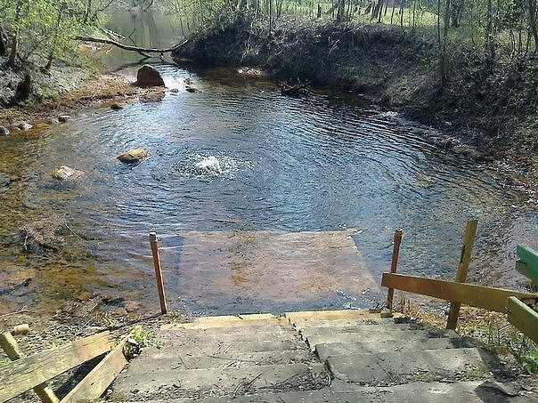 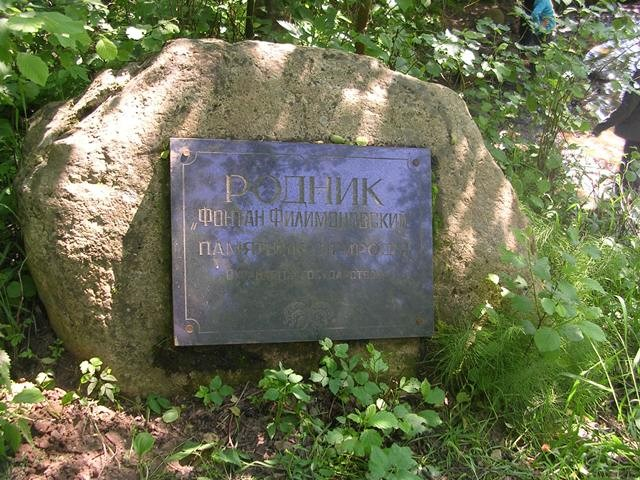Недалеко от Березовского Рядка (в 10 км), за деревней Ловница, на берегу реки Березайки находится памятник природы - Филимоновский фонтан. Родник сероводородный, поднимается на высоту до 40 см, от кромки реки на удалении около 10 метров.
Мшенцы. Источник
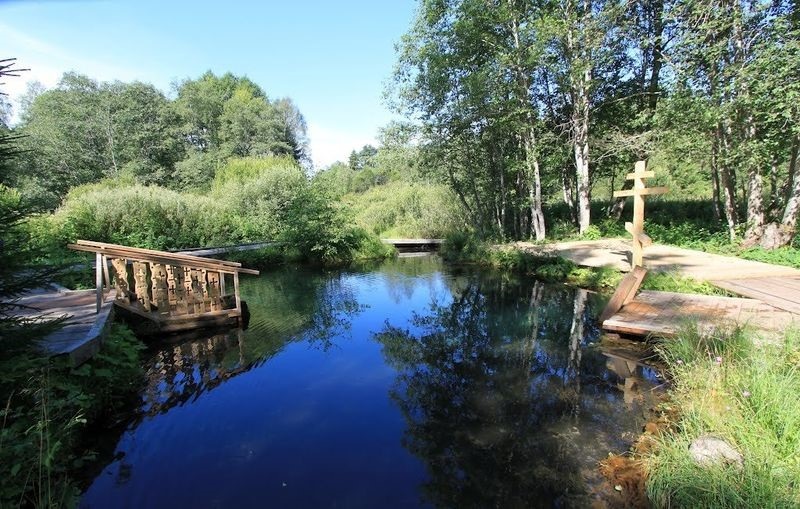Почти сто лет назад Рерих написал здесь в Мшенцах: «Точно неотпитая чаша стоит Русь. Неотпитая чаша – полный целебный родник. Среди обычного луга притаилась сказка. Самоцветами горит подземная сила. Русь верит и ждет». Чудо природы. Вода с высоким содержанием железа. Считается святой, целебной, «от всех болезней».
Бологовское озеро
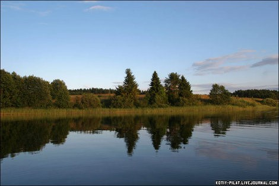Озеро, близ которого обнаружена стоянка древнего человека эпохи неолита. При раскопках найдены основания жилищ первобытных рыболовов и охотников, большое количество обломков глиняной посуды, кремневые наконечники стрел, скребки, ножи, каменные полированные топоры, костяные гарпуны, шилья и украшения в виде каменных колец и звериных зубов. Поселение на этом месте существовало и позже. Об этом свидетельствуют металлические вещи, также найденные при раскопках. Исследования здесь вели академик П. П. Ефименко, крупнейший знаток восточнославянских поселений П. Н. Третьяков, художник Н. К. Рерих.
Бологовское озеро привлекает исследователей богатством водной фауны и флоры. Здесь имеется более 450 видов водорослей, около 230 видов простейших организмов и почти 1100 видов насекомых.
Имение Путятиных (аллея)
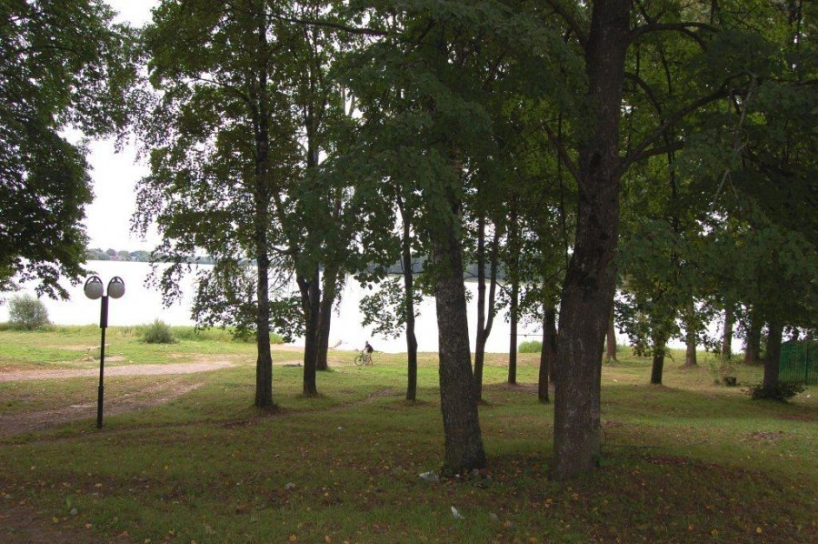 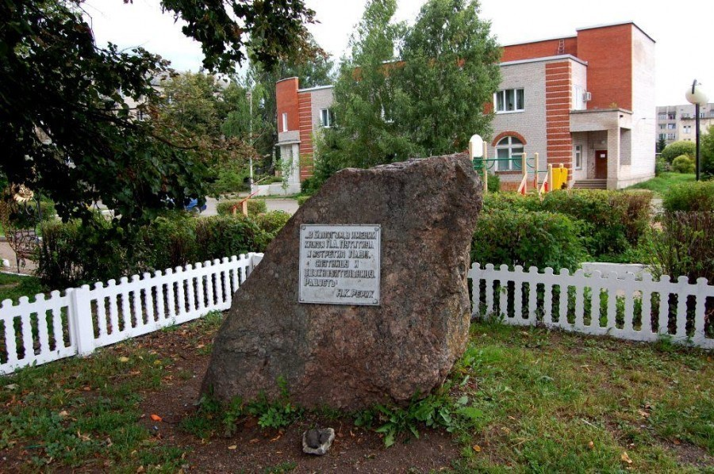Когда-то на этом месте располагалось имение Путятиных. Единственное, что от него осталось, это ведущая к озеру аллея. В этом имении часто гостил Николай Рерих, там же, о чём свидетельствует табличка на камне, он познакомился со своей будущей супругой княгиней Еленой Шапошниковой.
Парк Кемцы
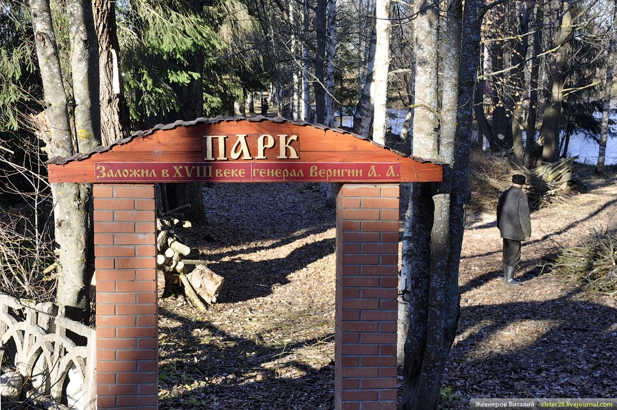 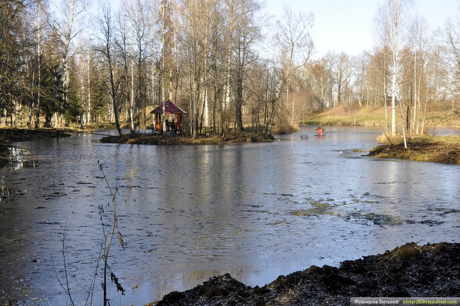Два пруда, которые сильно заросли и обмелели. В центре большого пруда – остров, а на северо-западном берегу – холмик, на котором, возможно, стояла беседка. От дороги пруд отделен аллеей, сохранившейся фрагментарно. Большой пруд соединен канавой с маленьким в северной части. Парк по характеру планировки делится на регулярный и пейзажный. Территория парка трапециевидной формы. Парк усадьбы Кемцы является памятником садово-паркового искусства кон. XVIII – сер. XIX в.в.. Интересен нестандартной, очень искусной планировкой, с живописной гидросистемой.
Дуб черешчатый
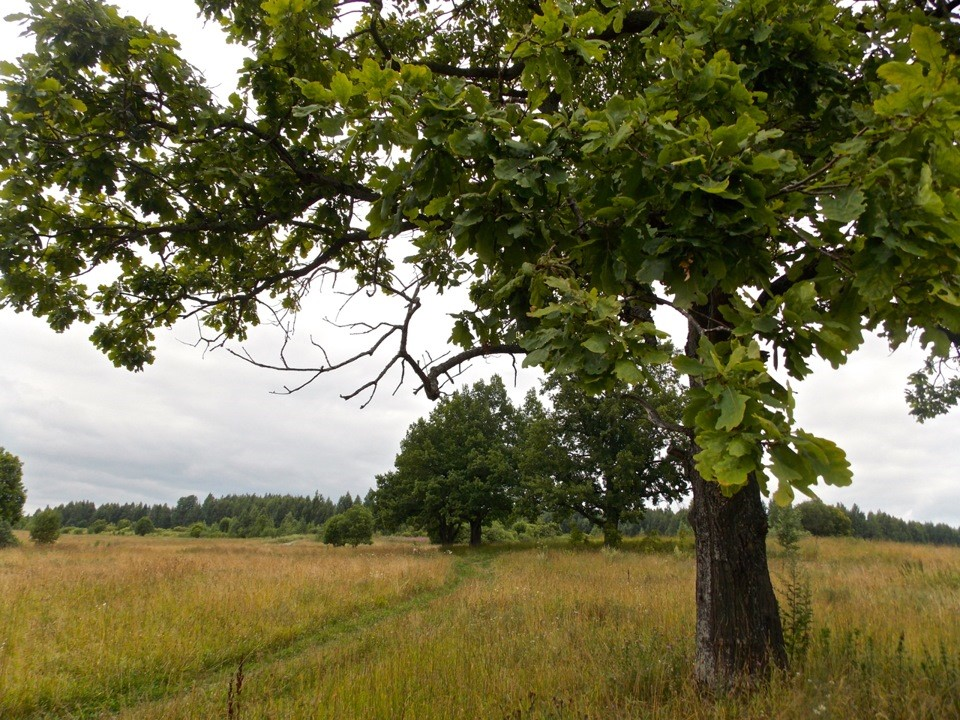Находится в старинном парке Кемцы. Имеет широкую раскидистую крону, В непосредственной близости, мимо дуба проходит аллея молодых лип с широкой пешеходной дорожкой. Так как дерево расположено в парке, строений рядом нет. Напротив располагается красивый пруд. По легенде, дуб посажен в 18 веке при закладке парка генералом Веригиным А.А. Возраст 300 лет, высота 35 метров, диаметр 1,40
Гагара чернозобая
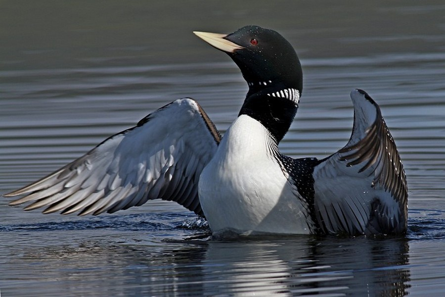С 80-х гг. гнездовья и выводки этого вида отмечались в Андреапольском и Селижаровском районах, возможно обитание в Бологовском, Пеновском и Осташковском районах . Общая численность в области не превышает 10 пар. В период пролета встречается в большом количестве на многих водоемах области.
Лесопарк «Красная горка»
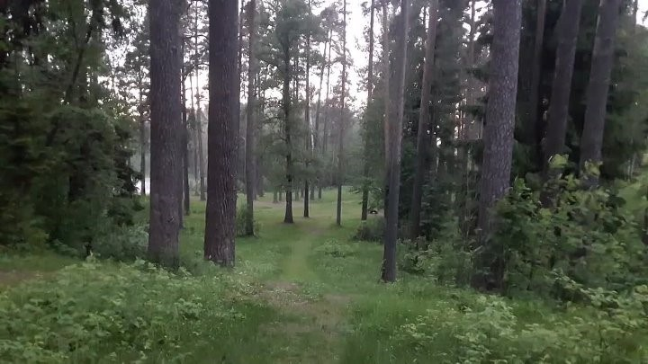 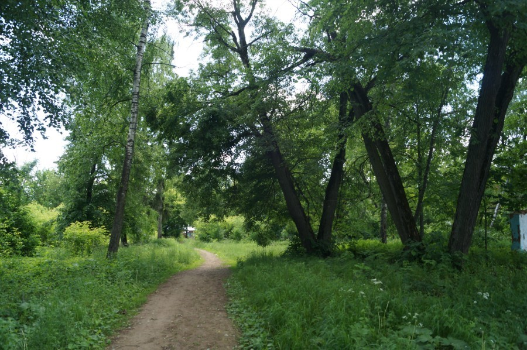Гнездо скопы у озера Вшивое
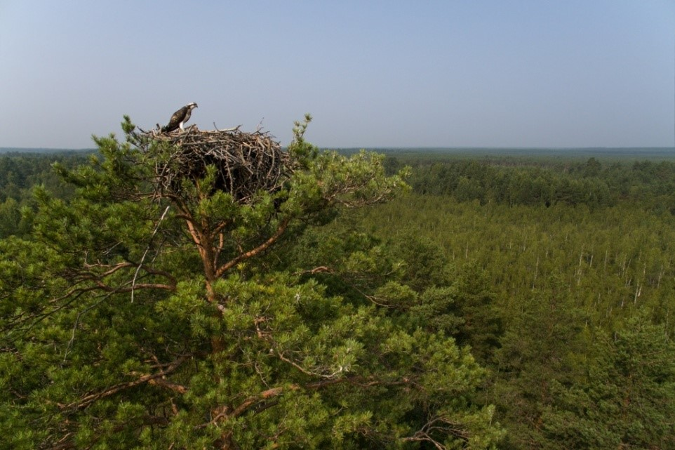Место для первого опыта по заселению скоп в апреле 1987 года было выбрано вблизи небольшого озера Вшивое в Бологовском районе. Свое название озеро получило из-за обилия дафний – “водяных вшей”. Пара скоп поселилась в его окрестностях. Во время грозы сосна со скопиным гнездом сгорела от удара молнии, гнездо перенесли на искусственную конструкцию на мачтовой сосне у края вырубки,. Зная, что скопы иногда образуют групповые поселения, рядом с первым было установлено второе, а позднее и третье гнездо. Теперь две пары птиц гнездятся в километре друг от друга.
. Озеро Бологое

В Бологовском районе 172 озера, общей площадью 11152 га. Озеро Бологое — городской водоём, по его берегам расположен город Бологое. Озеро имеет ложбинное происхождение и необычную форму, в основном оно вытянуто с севера на юг, в южной части озеро образует длинный залив с сильно заболоченными берегами, постепенно переходящий в озеро Глубочиха. Городские кварталы в нескольких местах подходят прямо к линии воды.
Источник и ручей "Святое поле "
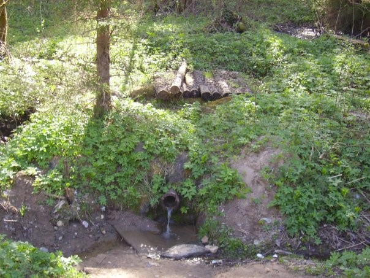
По дороге Бологое-Кемцы, в деревне Тимково есть поворот влево – до деревни Будущее (всегда деревня называлась Святое). В нескольких километрах перед ней через дорогу течет ручей. Приблизительно 60 лет назад по дороге стояла часовня над родником, вода в котором считается местными жителями святой. Существует предание, что во времена Литовского нашествия здесь стояла церковь. Литовцы жестоко пытали настоятеля, а он успел снять с себя нательный серебряный крест и бросить в родник. Старожилы утверждают, что часовня провалилась под землю. И поныне урочище носит название «Часовня».
Стояла она не просто так, а у старой березовой рощи, которая возвышалась посредине поля. В этой роще между березами довольно «преклонного возраста» находится старинное языческое кладбище, могилы которого обложены огромными камнями. Это и есть Святое поле.